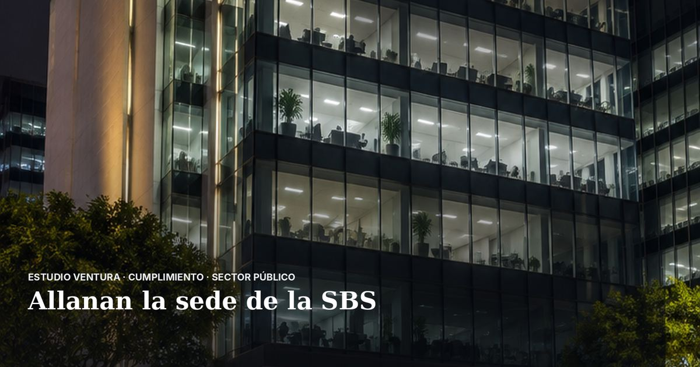

Allanan la sede de la SBS: lo que se sabe de la investigación

El 20 de noviembre de 2026, el Ministerio Público allanó la sede principal de la Superintendencia de Banca, Seguros y AFP (SBS) y la sede de la Sucamec, entre otros inmuebles. Según el comunicado de la propia SBS, dos de sus funcionarios estarían incluidos en una investigación por el presunto delito de negociación incompatible.
01Qué pasó
Según la tesis de la Fiscalía, recogida por medios como TV Perú, El Comercio y Gestión, funcionarios de la SBS y de la Sucamec habrían favorecido a dos empresas de transporte de valores para frenar el ingreso de un competidor. La SBS calificó el allanamiento de su sede como una medida desproporcionada, y la defensa de los funcionarios sostiene que actuaron dentro de sus competencias institucionales. No hay una decisión judicial sobre el fondo del caso.
02Ángulo Perú
Las investigaciones se encuentran en curso y rige la presunción de inocencia. Más allá del resultado, el caso recuerda la importancia de documentar la relación entre las empresas y sus reguladores.
03Ángulo legal
Si tu empresa trata con un regulador, documenta cada reunión y cada gestión, con agenda, asistentes y acuerdos, para que ningún contacto pueda confundirse con un favorecimiento.
Fuentes: comunicado de la SBS (20-11-2026), TV Perú, El Comercio, Gestión y Caretas. Información referencial; no constituye asesoría legal.